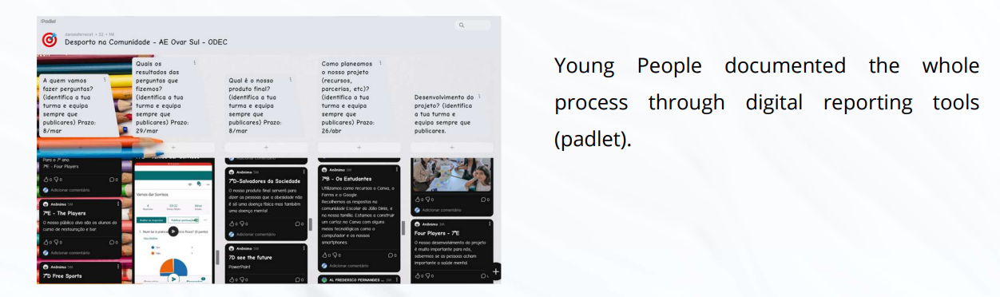

Youth Participatory Action Research
Context:
The study presented refers to the implementation of a participatory action research (Cammarota & Fine, 2008) program with adolescents and young athletes between 12 and 16 years of age. Based on youth participatory action research methodology (YPAR), this program analyzes each step of involvement of 104 adolescents and young athletes (organized in groups of six to eight elements) in sports and school contexts in the development and implementation of a community intervention project based on sports (Hellison & Martinek, 2009).
Two Major Goals:
- To understand if young people, when involved in the research process, can identify, investigate and act upon the social problems that affect their lives, defining actions to respond to these problems.
- To understand how participation in sporting contexts is associated with developing young athletes as citizens committed to building more inclusive societies when instigated to develop actions in/with the community to which they belong.
Three Phases:

- Dissemination of the project and recruitment of young volunteers, organization of work teams and training for the young athletes.
- Definition of the community profile, construction and implementation of the project considering the problems identified and the community resources.
- Analysis of the process data, organization of outputs, evaluation and dissemination (to the sports and surrounding community and the scientific community).
1st. Phase: Dissemination of the project and recruitment of young volunteers, organization of work teams and training for the young athletes
Presentation of the Project to teachers. The decision of the school to integrate this initiative in the time dedicated to the "Interdisciplinary Project" aligning with the theme of the school project - Caring today to guarantee Tomorrow. The ODEC team committed to supporting the teachers every 15 days with face-to-face visits. During the visits of the team members, participant observation was carried out with data recording through field notes.
2nd Phase: Definition of the community profile, construction and implementation of the project considering the problems identified and the community resources.
3rd Phase: Analysis of the process data, organization of outputs, evaluation and dissemination (to the sports and surrounding community and the scientific community).
Results:
- The ability of young people to integrate and engage in participatory processes, creating cooperative work dynamics, learning and implementing methodologies to get closer to the communities where they belong.
- Young people realized how they could get to know their community spaces better and identify their problems.
- Young people built proposals for activities based on sports as a tool to reduce social inequalities.
- Organizing a portfolio where young people recorded each stage of the process (from initial expectations to organization and negotiation within the working group and implementation of the proposed actions) allowed a joint analysis of the action research process as true researchers.
The addendum that I used in this html code are listed below:
<!DOCTYPE html>:This declaration defines the document type and version of HTML being used, which is HTML5 in this case.
<html>:This tag is the root element of an HTML document, containing all other HTML elements
<head>:The <head> HTML element contains machine-readable information (metadata) about the document, like its title, scripts, and style sheets.
<title>:The title global attribute contains text representing advisory information related to the element it belongs to.
<body>: The <body> HTML element represents the content of an HTML document. There can be only one
element in a document.
<header>: The <header>HTML element represents introductory content, typically a group of introductory or navigational aids. It may contain some heading elements but also a logo, a search form, an author name, and other elements.
<section>:The section HTML element represents a generic standalone section of a document, which doesn't have a more specific semantic element to represent it. Sections should always have a heading, with very few exceptions.
<heading >:The h1 to h6 HTML elements represent six levels of section headings. h1 is the highest section level and h6 is the lowest. By default, all heading elements create a block-level box in the layout, starting on a new line and taking up the full width available in their containing block.
<paragraph>:The paragraph HTML element represents a paragraph. Paragraphs are usually represented in visual media as blocks of text separated from adjacent blocks by blank lines and/or first-line indentation, but HTML paragraphs can be any structural grouping of related content, such as images or form fields.
<ul>:The ul HTML element represents an unordered list of items, typically rendered as a bulleted list.
<ol>:he ol HTML element represents an ordered list of items — typically rendered as a numbered list.
<img src/>:The img HTML element embeds an image into the document
<a>:: the anchor &tag a is typically used to create hyperlinks within the document. It includes an href attribute to specify the URL the link points to.
<br>The br HTML element produces a line break in text (carriage-return). It is useful for writing a poem or an address, where the division of lines is significant.